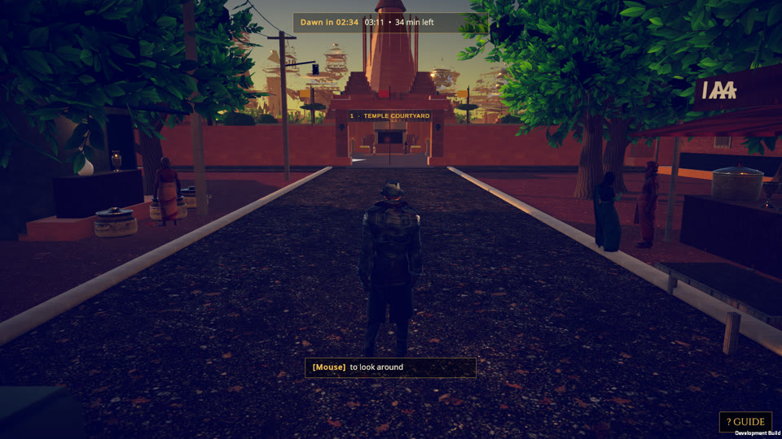
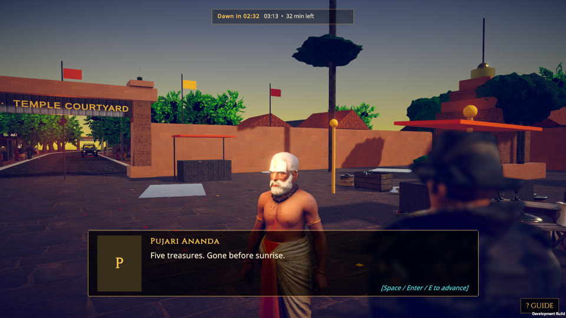
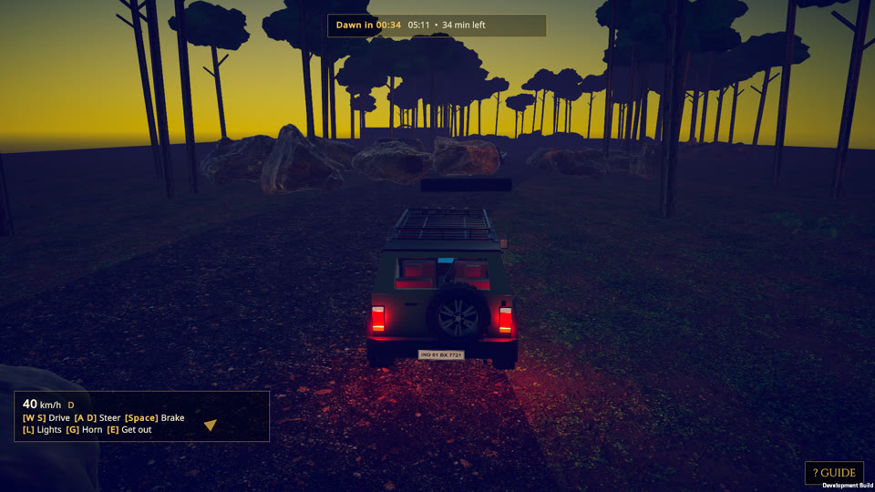
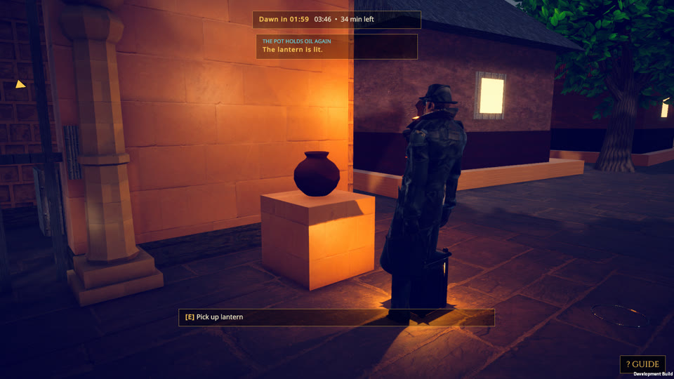
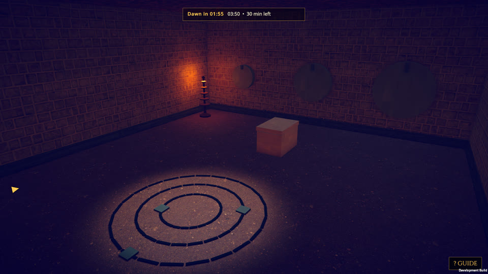
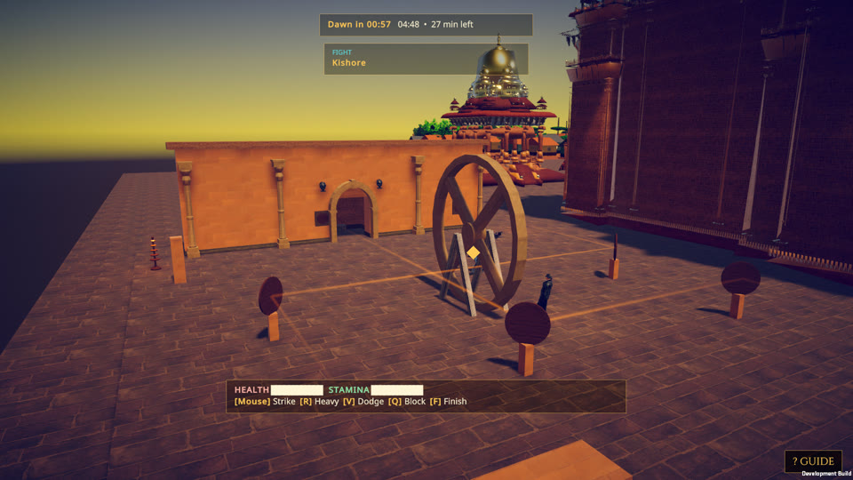

A comparison study of how, why and what our educational game teaches
In short. Legacy of the Temple turns observation, reasoning and simple physics of light and water into puzzles you must solve to move on. Five fictional temple treasures were stolen from Suryapur on the night before the festival; the Dawn Clock runs to 05:45. You look at a scene, put it back together, watch what it shows you, and use the evidence to find the thief. This report explains why that helps, compares the game with other ways of learning, sums up what published research says about learning games, and sets out how our own study will measure whether it works.
Status of the evidence. Sections 1–5 are complete. Section 6 describes our study; its results will be added after the playtest sessions. No results are shown before real data has been collected.
Many students meet history and science as facts to memorise. They can say that "temples are part of our heritage" or that "light reflects off a mirror at the same angle", but often cannot use the idea in a new situation, and heritage feels like something in a museum case rather than something that belongs to a living community. Three common problems:
A mystery game can address all three: every puzzle is practice, the world reacts immediately, and a story with a deadline gives a reason to keep going.
Legacy of the Temple is a third-person 3D mystery and action game for Mac, built in Unity with models from Blender. You are Aryan, an investigator. Pujari Ananda asks you to recover five stolen treasures before sunrise; Meera, a village girl, gives you leads; and two robbers, Bhaskar and Kishore, stand in your way. The treasures are fictional; the real Jagannath idol is only a respectful background element and is never touched.
| Feature | Detail |
|---|---|
| Size | One temple village with six places (bazaar, storeroom, vaults, stepwell, Sun Wall, river road); about 20–30 minutes of play |
| Ideas used | Observation and reasoning from evidence, light and shadow, reflection by mirrors, water levels and floating, planning moves, and why heritage matters to a community |
| Help | Press H for up to three hints at the puzzle you stand at; each hint costs score, so players try first |
| Challenge | The Dawn Clock counts down to 05:45; a short fight in every place; a jeep chase at the end |
| Voices | 166 spoken lines with subtitles for every moment (puzzles, the jeep, fights, the clock); a setting for how often the hero talks |
| Quality | Automated play-mode tests, and a test bot that plays the whole story in the finished Mac app and reports errors (0 in the latest run) |



Every puzzle follows one loop, built on the investigation story. It matches the well-known predict, observe, explain approach to science teaching: the player first works out what must have happened, then tests it in the world.
| Place | Idea | What the player does |
|---|---|---|
| Storeroom | Rebuilding a scene from evidence; light shows what is hidden | Carries three pot shards back to the plinth; the pot holds oil again and the lantern lights. Set on the oil stain, its light shows the loose flagstone. The lock plate is scratched on the inside: someone opened the door from within. |
| Vaults | Reading a light pattern; planning moves | Pushes stone blocks onto pressure plates (one must go round a pillar), then turns three discs to match the rings of light that the roof grate draws on the floor. |
| Stepwell | Water level and floating | Opens two sluices so the tank floods and the raft rises, then drains to the right mark: too much water hides the carved panel. The obvious move is not the answer. |
| Sun Wall | Reflection and blocking light | Turns four mirrors so two sunbeams reach two carvings, then turns a stone wheel so a spoke stops blocking one beam. |
| Evidence board | Reasoning from clues | Four small clues (a list in neat handwriting, scratches inside the lock, a ledger signed "M.", a key ring) point to one person; the player names the inside man once. |
| Ending | Why heritage matters | "Their value isn't money. It's memory." The treasures go back to the priest at sunrise. |



The table compares typical forms of each method. Individual products vary; quiz apps and museum visits, for example, differ a great deal.
| What matters for learning | Textbook / lecture | Museum or heritage walk | Video lessons | Quiz apps | Typical learning games | Legacy of the Temple |
|---|---|---|---|---|---|---|
| Learning by doing (using the idea, not only reading it) | No | Partly | No | Partly | Partly | Yes |
| Immediate feedback on mistakes | No | No | No | Yes | Yes | Yes, the world reacts |
| Work it out before seeing the answer | Partly | No | Partly | No | Partly | Yes, every crime scene |
| Help at the moment you are stuck | No | A guide, if present | No | Partly | Partly | Yes, three hints (H) |
| Story and a reason to keep going | No | Partly | Partly | Points only | Yes | Yes, the Dawn Clock and five treasures |
| Heritage felt as a living place | No | Yes | Partly | No | Varies | Yes, a village, its people and its temple |
| Own pace | Yes | Group pace | Yes | Often timed | Yes | Yes, with a soft deadline |
| Works without internet | Yes | Yes | Usually not | Usually not | Varies | Yes |
Trade-offs. Our game needs a computer and takes longer per idea than reading a summary, and it covers each idea through one or two puzzles rather than a full syllabus. It does not record learning data by itself; the study uses forms and the ending screen. It is meant to add to classes, textbooks and visits, giving practice and interest, not to replace them.
To check that the game itself helps, we compare each participant's knowledge and attitudes before and after playing, and note how they played.
| Measure | Before vs after | Test |
|---|---|---|
| Knowledge (0–6) | Set A score vs Set B score, per participant | Wilcoxon signed-rank test (paired); normalised gain ⟨g⟩ = (post − pre) / (6 − pre) |
| Confidence in answers (1–5) | Pre vs post rating | Wilcoxon signed-rank test |
| "Games can help people learn" (1–5) | Pre vs post agreement | Wilcoxon signed-rank test |
| Interest in heritage (1–5) | Pre vs post agreement | Wilcoxon signed-rank test |
| Enjoyment and difficulty | Post-play ratings | Means and spread |
| How they played | Places reached, hints, score | Descriptive; Spearman ρ with knowledge gain |
| Gamers vs non-gamers | Gain by gaming frequency | Mann-Whitney U test |
Legacy of the Temple applies what research shows helps people learn: active problem-solving, working things out before seeing the result, immediate feedback, help at the moment of need, and a story that keeps players going. It also shows heritage as part of a living community rather than an object in a case. Our playtest study will show whether these advantages appear in practice for our participants.
Please check each reference against the original paper before submitting.